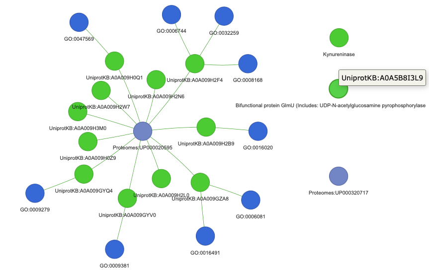
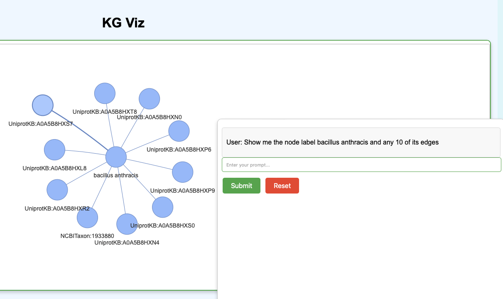

Commands
import: This loads the nodes and edges file into a Neo4j instance. This will take a while depending on the size of the tsv files.kg importtest-query: To test that the above worked, run a built-in test query:kg test-query --database neo4j
This should return something like (as per KGX data in the repo):
{'n': {'label': 'Streptomyces thermocarboxydovorans', 'id': 'NCBITaxon:59298'}} {'n': {'label': 'Streptomyces thermocarboxydus', 'id': 'NCBITaxon:59299'}} {'n': {'label': 'Streptomyces thermogriseus', 'id': 'NCBITaxon:75292'}} {'n': {'label': 'Streptomyces thermospinosisporus', 'id': 'NCBITaxon:161482'}} {'n': {'label': 'Streptomyces vitaminophilus', 'id': 'NCBITaxon:76728'}} {'n': {'label': 'Streptomyces yanii', 'id': 'NCBITaxon:78510'}} {'n': {'label': 'Kitasatospora azatica', 'id': 'NCBITaxon:58347'}} {'n': {'label': 'Kitasatospora paracochleata', 'id': 'NCBITaxon:58354'}} {'n': {'label': 'Kitasatospora putterlickiae', 'id': 'NCBITaxon:221725'}} {'n': {'label': 'Kitasatospora sampliensis', 'id': 'NCBITaxon:228655'}}
qna: This command can be used for asking a question about the data and receiving a response.kg qna --database neo4j "give me the sorted (descending) frequency count nodes with relationships. Give me label and id. I want this as a table "
This should return
> Entering new GraphCypherQAChain chain... Generated Cypher: MATCH (n:Node)-[r:RELATIONSHIP]->(m:Node) RETURN n.label AS label, n.id AS id, COUNT(r) AS frequency ORDER BY frequency DESC Full Context: [{'label': 'hydrocarbon', 'id': 'CHEBI:24632', 'frequency': 2381}, {'label': 'Marinobacterium coralli', 'id': 'NCBITaxon:693965', 'frequency': 55}, {'label': 'Marinobacterium coralli LMG 25435', 'id': 'NCBITaxon:693965', 'frequency': 55}, {'label': 'Ruegeria mobilis DSM 23403', 'id': 'NCBITaxon:379347', 'frequency': 47}, {'label': 'Ruegeria mobilis S1942', 'id': 'NCBITaxon:379347', 'frequency': 47}, {'label': 'Ruegeria pelagia', 'id': 'NCBITaxon:379347', 'frequency': 47}, {'label': 'ruegeria_pelagia', 'id': 'NCBITaxon:379347', 'frequency': 47}, {'label': 'ruegeria_mobilis', 'id': 'NCBITaxon:379347', 'frequency': 47}, {'label': 'Ruegeria mobilis', 'id': 'NCBITaxon:379347', 'frequency': 47}, {'label': 'Ruegeria mobilis 45A6', 'id': 'NCBITaxon:379347', 'frequency': 47}] > Finished chain. ('| Label | ID | Frequency |\n' '|------------------------------|-----------------|-----------|\n' '| hydrocarbon | CHEBI:24632 | 2381 |\n' '| Marinobacterium coralli | NCBITaxon:693965| 55 |\n' '| Ruegeria mobilis | NCBITaxon:379347| 47 |\n' '| Ruegeria pelagia | NCBITaxon:379347| 47 |\n' '| Ruegeria mobilis DSM 23403 | NCBITaxon:379347| 47 |\n' '| Ruegeria mobilis S1942 | NCBITaxon:379347| 47 |\n' '| Ruegeria pelagia | NCBITaxon:379347| 47 |\n' '| ruegeria_pelagia | NCBITaxon:379347| 47 |\n' '| ruegeria_mobilis | NCBITaxon:379347| 47 |\n' '| Ruegeria mobilis 45A6 | NCBITaxon:379347| 47 |')chat: This starts an interactive chat session where you can ask questions about your KG.kg chat --database neo4j
Gives you the following:
Ask me about your data! :
To quit type
quitorexit.Ask me about your data! : Give me a brief statistic about the table > Entering new GraphCypherQAChain chain... Generated Cypher: MATCH (n:Node)-[r:RELATIONSHIP]->(m:Node) RETURN COUNT(n) AS nodeCount, COUNT(r) AS relationshipCount Full Context: [{'nodeCount': 598598, 'relationshipCount': 598598}] > Finished chain. 'The table contains 598,598 nodes and 598,598 relationships.' Ask me about your data! : give me a table of the 5 most frequent relationships > Entering new GraphCypherQAChain chain... Generated Cypher: cypher MATCH ()-[r:RELATIONSHIP]->() RETURN r.type AS RelationshipType, COUNT(r) AS Frequency ORDER BY Frequency DESC LIMIT 5 Full Context: [{'RelationshipType': 'biolink:capable_of', 'Frequency': 225052}, {'RelationshipType': 'biolink:location_of', 'Frequency': 187104}, {'RelationshipType': 'biolink:consumes', 'Frequency': 107037}, {'RelationshipType': 'biolink:has_phenotype', 'Frequency': 79168}, {'RelationshipType': 'biolink:has_chemical_role', 'Frequency': 237}] > Finished chain. ('| Relationship Type | Frequency |\n' '|------------------------------|-----------|\n' '| biolink:capable_of | 225052 |\n' '| biolink:location_of | 187104 |\n' '| biolink:consumes | 107037 |\n' '| biolink:has_phenotype | 79168 |\n' '| biolink:has_chemical_role | 237 |') Ask me about your data! : Give me node IDs and labels of any 10 nodes that have the word strep in it > Entering new GraphCypherQAChain chain... Generated Cypher: cypher MATCH (n:Node) WHERE n.label CONTAINS 'strep' RETURN n.id, n.label LIMIT 10 Full Context: [{'n.id': 'NCBITaxon:33035', 'n.label': 'Peptostreptococcus productus'}, {'n.id': 'NCBITaxon:596329', 'n.label': 'Peptostreptococcus anaerobius 653-L'}, {'n.id': 'NCBITaxon:1261', 'n.label': 'Peptostreptococcus anaerobius'}, {'n.id': 'NCBITaxon:596315', 'n.label': 'Peptostreptococcus stomatis DSM 17678'}, {'n.id': 'NCBITaxon:1262', 'n.label': 'Peptostreptococcus sp. 2'}, {'n.id': 'NCBITaxon:1261', 'n.label': 'Peptostreptococcus anaerobius 0009-10 Hillier'}, {'n.id': 'NCBITaxon:1262', 'n.label': 'Peptostreptococcus sp. ACS-065-V-Col13'}, {'n.id': 'NCBITaxon:796937', 'n.label': 'Peptostreptococcaceae bacterium CM2'}, {'n.id': 'NCBITaxon:796937', 'n.label': 'Peptostreptococcaceae bacterium ACC19a'}, {'n.id': 'NCBITaxon:796937', 'n.label': 'Peptostreptococcaceae bacterium CM5'}] > Finished chain. ('Here are the node IDs and labels of 10 nodes that have the word "strep" in ' 'them:\n' '\n' '1. NCBITaxon:33035 - Peptostreptococcus productus\n' '2. NCBITaxon:596329 - Peptostreptococcus anaerobius 653-L\n' '3. NCBITaxon:1261 - Peptostreptococcus anaerobius\n' '4. NCBITaxon:596315 - Peptostreptococcus stomatis DSM 17678\n' '5. NCBITaxon:1262 - Peptostreptococcus sp. 2\n' '6. NCBITaxon:1261 - Peptostreptococcus anaerobius 0009-10 Hillier\n' '7. NCBITaxon:1262 - Peptostreptococcus sp. ACS-065-V-Col13\n' '8. NCBITaxon:796937 - Peptostreptococcaceae bacterium CM2\n' '9. NCBITaxon:796937 - Peptostreptococcaceae bacterium ACC19a\n' '10. NCBITaxon:796937 - Peptostreptococcaceae bacterium CM5')
If the prompt has the phrase
show mein it,kg-chatwould render an HTML output with KG representation of the response. For example:kg-chat $ kg chat --database neo4j Ask me about your data! : show me 1 node with prefix NCBITaxon: that has at least 3 edges but less than 10 edges > Entering new GraphCypherQAChain chain... Generated Cypher: cypher MATCH (n:Node) WHERE n.id STARTS WITH 'NCBITaxon:' WITH n, size((n)-[:RELATIONSHIP]->()) AS outDegree, size((n)<-[:RELATIONSHIP]-()) AS inDegree WHERE (outDegree + inDegree) >= 3 AND (outDegree + inDegree) < 10 WITH n LIMIT 1 MATCH (n)-[r:RELATIONSHIP]-(m:Node) RETURN { nodes: collect({label: n.label, id: n.id}) + collect({label: m.label, id: m.id}), edges: collect({source: {label: n.label, id: n.id}, target: {label: m.label, id: m.id}, relationship: r.type}) } AS result Full Context: [{'result': {'nodes': [{'label': 'Hysterium', 'id': 'NCBITaxon:100026'}, {'label': 'Hysterium', 'id': 'NCBITaxon:100026'}, {'label': 'Hysterium', 'id': 'NCBITaxon:100026'}, {'label': 'Hysterium', 'id': 'NCBITaxon:100026'}, {'label': 'Hysterium', 'id': 'NCBITaxon:100026'}, {'label': 'Hysterium', 'id': 'NCBITaxon:100026'}, {'label': 'Hysterium', 'id': 'NCBITaxon:100026'}, {'label': 'Hysterium', 'id': 'NCBITaxon:100026'}, {'label': 'Hysterium vermiforme', 'id': 'NCBITaxon:714895'}, {'label': 'Hysterium barrianum', 'id': 'NCBITaxon:707625'}, {'label': 'Hysterium angustatum', 'id': 'NCBITaxon:574775'}, {'label': 'Hysterium hyalinum', 'id': 'NCBITaxon:574776'}, {'label': 'unclassified Hysterium', 'id': 'NCBITaxon:2649321'}, {'label': 'Hysterium rhizophorae', 'id': 'NCBITaxon:2066082'}, {'label': 'Hysterium pulicare', 'id': 'NCBITaxon:100027'}, {'label': 'Hysteriaceae', 'id': 'NCBITaxon:100025'}], 'edges': [{'source': {'label': 'Hysterium', 'id': 'NCBITaxon:100026'}, 'relationship': 'biolink:subclass_of', 'target': {'label': 'Hysterium vermiforme', 'id': 'NCBITaxon:714895'}}, {'source': {'label': 'Hysterium', 'id': 'NCBITaxon:100026'}, 'relationship': 'biolink:subclass_of', 'target': {'label': 'Hysterium barrianum', 'id': 'NCBITaxon:707625'}}, {'source': {'label': 'Hysterium', 'id': 'NCBITaxon:100026'}, 'relationship': 'biolink:subclass_of', 'target': {'label': 'Hysterium angustatum', 'id': 'NCBITaxon:574775'}}, {'source': {'label': 'Hysterium', 'id': 'NCBITaxon:100026'}, 'relationship': 'biolink:subclass_of', 'target': {'label': 'Hysterium hyalinum', 'id': 'NCBITaxon:574776'}}, {'source': {'label': 'Hysterium', 'id': 'NCBITaxon:100026'}, 'relationship': 'biolink:subclass_of', 'target': {'label': 'unclassified Hysterium', 'id': 'NCBITaxon:2649321'}}, {'source': {'label': 'Hysterium', 'id': 'NCBITaxon:100026'}, 'relationship': 'biolink:subclass_of', 'target': {'label': 'Hysterium rhizophorae', 'id': 'NCBITaxon:2066082'}}, {'source': {'label': 'Hysterium', 'id': 'NCBITaxon:100026'}, 'relationship': 'biolink:subclass_of', 'target': {'label': 'Hysterium pulicare', 'id': 'NCBITaxon:100027'}}, {'source': {'label': 'Hysterium', 'id': 'NCBITaxon:100026'}, 'relationship': 'biolink:subclass_of', 'target': {'label': 'Hysteriaceae', 'id': 'NCBITaxon:100025'}}]}}] > Finished chain. ('```json\n' '{\n' ' "nodes": [\n' ' {"label": "Hysterium", "id": "NCBITaxon:100026"},\n' ' {"label": "Hysterium vermiforme", "id": "NCBITaxon:714895"},\n' ' {"label": "Hysterium barrianum", "id": "NCBITaxon:707625"},\n' ' {"label": "Hysterium angustatum", "id": "NCBITaxon:574775"},\n' ' {"label": "Hysterium hyalinum", "id": "NCBITaxon:574776"},\n' ' {"label": "unclassified Hysterium", "id": "NCBITaxon:2649321"},\n' ' {"label": "Hysterium rhizophorae", "id": "NCBITaxon:2066082"},\n' ' {"label": "Hysterium pulicare", "id": "NCBITaxon:100027"},\n' ' {"label": "Hysteriaceae", "id": "NCBITaxon:100025"}\n' ' ],\n' ' "edges": [\n' ' {"source": {"label": "Hysterium", "id": "NCBITaxon:100026"}, ' '"target": {"label": "Hysterium vermiforme", "id": "NCBITaxon:714895"}, ' '"relationship": "biolink:subclass_of"},\n' ' {"source": {"label": "Hysterium", "id": "NCBITaxon:100026"}, ' '"target": {"label": "Hysterium barrianum", "id": "NCBITaxon:707625"}, ' '"relationship": "biolink:subclass_of"},\n' ' {"source": {"label": "Hysterium", "id": "NCBITaxon:100026"}, ' '"target": {"label": "Hysterium angustatum", "id": "NCBITaxon:574775"}, ' '"relationship": "biolink:subclass_of"},\n' ' {"source": {"label": "Hysterium", "id": "NCBITaxon:100026"}, ' '"target": {"label": "Hysterium hyalinum", "id": "NCBITaxon:574776"}, ' '"relationship": "biolink:subclass_of"},\n' ' {"source": {"label": "Hysterium", "id": "NCBITaxon:100026"}, ' '"target": {"label": "unclassified Hysterium", "id": "NCBITaxon:2649321"}, ' '"relationship": "biolink:subclass_of"},\n' ' {"source": {"label": "Hysterium", "id": "NCBITaxon:100026"}, ' '"target": {"label": "Hysterium rhizophorae", "id": "NCBITaxon:2066082"}, ' '"relationship": "biolink:subclass_of"},\n' ' {"source": {"label": "Hysterium", "id": "NCBITaxon:100026"}, ' '"target": {"label": "Hysterium pulicare", "id": "NCBITaxon:100027"}, ' '"relationship": "biolink:subclass_of"},\n' ' {"source": {"label": "Hysterium", "id": "NCBITaxon:100026"}, ' '"target": {"label": "Hysteriaceae", "id": "NCBITaxon:100025"}, ' '"relationship": "biolink:subclass_of"}\n' ' ]\n' '}\n' '```') ../kg-chat/src/kg_chat/graph_output/knowledge_graph.html Ask me about your data! :
This results in the formation of the knowledge_graph.html file.
app: This command can be used to start the KG chat app.kg appThis will start the app on http://localhost:8050/ which can be accessed in the browser.
Example:
